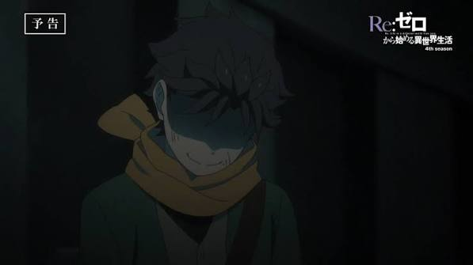
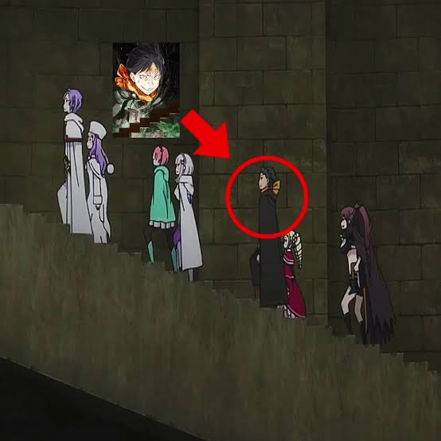
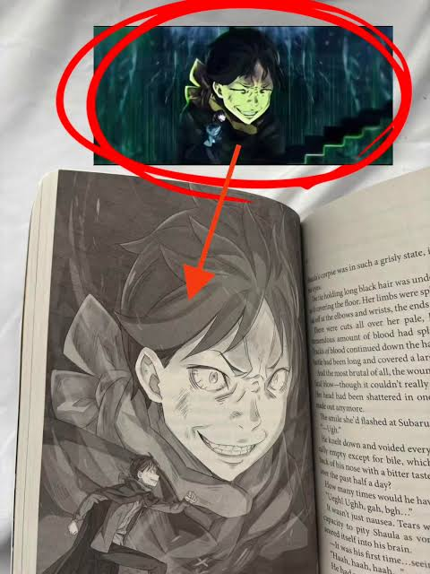

Aura in The Anime
The anime depiction of Subaru’s notorious "aura monster" staircase climb was a classic victim of mismatched expectations, leaving fans thoroughly deflated after months of hyperbolic internet hype. Thanks to viral fan animations and edits set to heavy phonk music, the community had reshaped Light Novel Volume 23’s manic illustration into a god-tier flex, painting Subaru as a terrifying, untouchable force of nature strutting up the Pleiades Watchtower to unleash havoc. When the scene was finally adapted, however, the anime stripped away the flashy visual flair in favor of a quiet, claustrophobic psychological breakdown. By prioritizing tight framing on his feet, jagged breathing, and his tragic internal monologue, the sequence focused strictly on his raw mental fragility over raw intimidation. While narratively faithful to the true context of a traumatized teenager losing his mind, replacing the meme-ified, swagger-filled "monster" with a grounded panic attack felt like a massive letdown to anyone hoping to see the internet's favorite dark-fantasy flex brought to animated life.

Teasers
Long before the scene actually hit the screen, the online Re:Zero fandom turned the upcoming "aura monster" staircase moment into an almost mythical event through non-stop teasers, fan animations, and viral edits. Fueled by light novel illustrations and fan-made animations setting Subaru’s march to heavy phonk tracks, the hype machine worked overtime to frame the sequence as the ultimate anime flex. Every promotional trailer drop, episode preview, and social media breakdown was dissected by fans hunting for even a single frame of the Pleiades Watchtower stairs, creating a surreal buildup where casual viewers were convinced Subaru was about to pull off the most dominant, aura-dripping power move in modern isekai history. By the time the episode actually arrived, the relentless community teasing had elevated a single sequence into a localized internet phenomenon, setting expectations so astronomically high that the scene was practically carrying the weight of the entire season's hype on its shoulders.

Aura in Ink
In Volume 23 of the Re:Zero light novel, the staircase scene is not a heroic flex, but rather one of the darkest, most disturbing psychological collapses in Arc 6. Traumatized by sudden amnesia and trapped in a nightmare loop of violent deaths inside the Pleiades Watchtower, Subaru completely snaps, descending into a manic, paranoid frenzy where survival instinct curdles into homicidal panic. As he ascends the tower stairs armed with a weapon to eliminate anyone he suspects might betray him, Shinichirou Otsuka’s haunting illustration depicts him with a vacant, unhinged grin. The scene radiates an unsettling dread—capturing a broken teenager's tragic descent into paranoia rather than an unstoppable anime flex, which makes the internet’s ironic transformation of this moment into the ultimate "aura monster" edit all the more surreal.